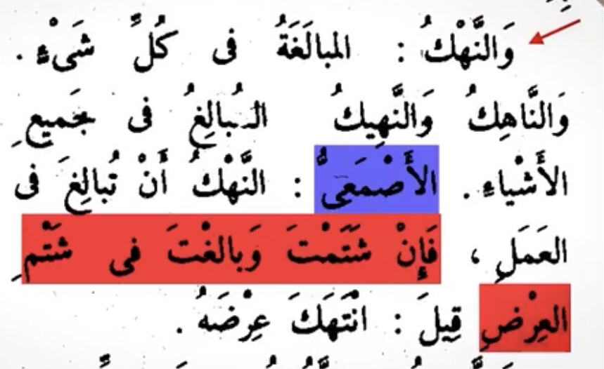

So this has been issued from a narration In mustadrak al-sahihayn that is authentic (Al-Albani) the issued word is هتك عرضي now what does this word mean
In lisan al-arab al-asma’i says if you insulted someone badly it is called هتك العرض

Al-faraby says hatk al-ird means insulting badly
The narration just means that Abu sufyan used to love the prophet but then he turned against him and starting making poems insulting him